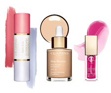
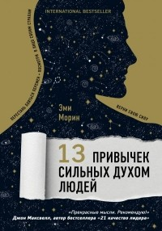
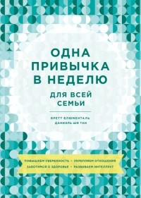
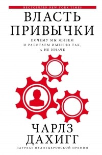
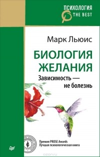
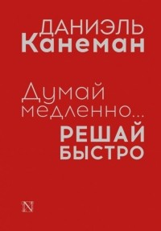
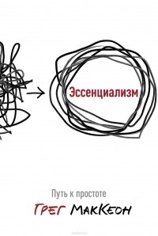
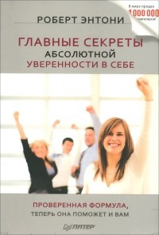

Время преуспевать с Clarins.ru
Гармония с собой и своим телом, внутренняя и внешняя красота приходят с балансом. Найти баланс между личной и социальной жизнью, работой и любимым хобби, семьёй и друзьями – это сложный процесс, требующий многих навыков, в том числе и тайм-менеджмента.
Французский косметический бренд Clarins и LiveLib подготовили для вас подборку книг с высоким рейтингом о тайм-менеджменте и полезных привычках, чтобы вы смогли быстрее найти гармонию и внутренний баланс.

Подарок от CLARINS
-40% на все средства макияжа*
*кроме новинок
-  13 привычек сильных духом людей
- Просто космос. Практикум по Agile-жизни, наполненной смыслом и энергией
-  Одна привычка в неделю для всей семьи
-  Власть привычки. Почему мы живем и работаем именно так, а не иначе
-  Биология желания. Зависимость - не болезнь
- Эмоциональный интеллект. Почему он может значить больше, чем IQ
-  Думай медленно... Решай быстро
- Никогда-нибудь. Как выйти из тупика и найти себя Елена Резанова
-  Эссенциализм. Путь к простоте
-  Главные секреты абсолютной уверенности в себе
- Женщина начинается с тела
- Переключайтесь. Как меняться, когда это непросто